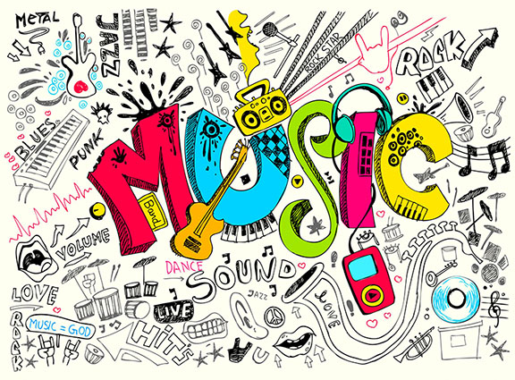

My favorite hobby!
MUSIC

The Marias
The Marias is an American indie pop band from Los Angeles. They are known for performing songs in both English and Spanish in addition to infusing their music with elements including jazz percussion, guitar riffs, and horn solos.